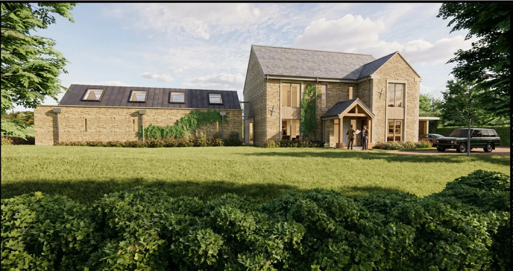
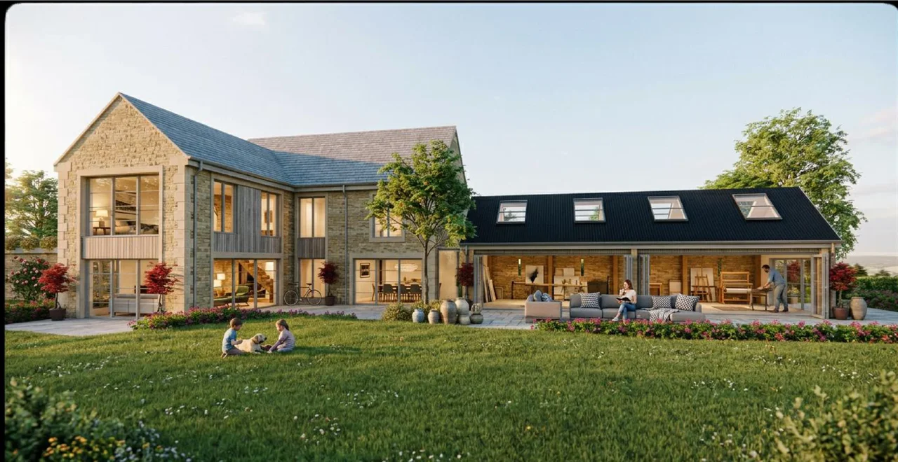

Proposed visualisations of the home at Tews End Lane, Paulerspury.
A Reserved single home at Tews End Lane on the edge of Paulerspury, Northamptonshire.
The vision for the home is to create a timeless country residence that combines traditional English architecture with modern family living. Inspired by classic farmhouses and manor houses, the property will feature natural stone elevations, traditional flush casement windows in a soft taupe finish, carefully proportioned glazing, and handcrafted detailing throughout. Every design decision has been made to ensure the house feels as though it has always belonged within the landscape.
Internally, the layout has been carefully considered to prioritise family life. Large, light-filled living spaces will open onto the gardens, whilst retaining a sense of warmth and intimacy. Practical spaces including a generous pantry, utility room and boot room support everyday living, with a double garage complementing the overall design. The principal suite will occupy the upper floor, creating a private retreat overlooking the surrounding countryside.
Sustainability is a key part of the project. The home is being designed to incorporate modern, energy-efficient technologies including an air source heat pump, high levels of insulation and mechanical ventilation with heat recovery, ensuring exceptional performance whilst maintaining the traditional appearance of the property.
A spacious country home of approximately 250–260 sqm, the project demonstrates that thoughtful design is not about building bigger, but building better. The focus throughout has been on quality, longevity and creating a home that will stand the test of time, both architecturally and environmentally.
Tews End Lane represents Abel Gray's approach to development — delivering carefully considered homes that respect their setting, celebrate traditional architecture and provide exceptional places to live for generations to come. The design has been intentionally kept sympathetic to the village's rural character and historic landscape, including the nearby historic hollow way, ensuring the new home enhances rather than competes with its surroundings.
Paulerspury, Northamptonshire
Reserved
Bespoke
Single Dwelling
c. 250–260 m²